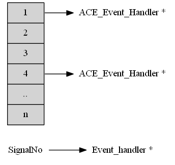
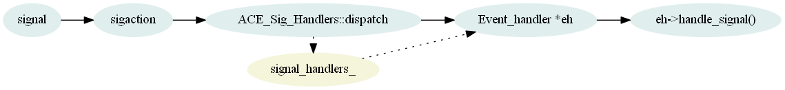

6. 信号量的管理¶
6.1. 全局信号量数据结构¶
全局变量：ACE_Event_Handler *ACE_Sig_Handler::signal_handlers_[ACE_NSIG];
6.2. 信号量的注册¶
信号量结构定义
ace/Sig_Handler.cpp
1 2 3 4 5 6 7 8 9 10 11 12 13 14 15 16 17 18 19 20 21 22 23 24 25 | #if defined (ACE_HAS_SIG_C_FUNC)
extern "C" void
ace_sig_handler_dispatch (int signum, siginfo_t *info, ucontext_t *context)
{
ACE_TRACE ("ace_sig_handler_dispatch");
ACE_Sig_Handler::dispatch (signum, info, context);
}
#define ace_signal_handler_dispatcher ACE_SignalHandler(ace_sig_handler_dispatch)
extern "C" void
ace_sig_handlers_dispatch (int signum, siginfo_t *info, ucontext_t *context)
{
ACE_TRACE ("ace_sig_handlers_dispatch");
ACE_Sig_Handlers::dispatch (signum, info, context);
}
#define ace_signal_handlers_dispatcher ACE_SignalHandler(ace_sig_handlers_dispatch)
#else
#define ace_signal_handler_dispatcher ACE_SignalHandler(ACE_Sig_Handler::dispatch)
#define ace_signal_handlers_dispatcher ACE_SignalHandler(ACE_Sig_Handlers::dispatch)
#endif /* ACE_HAS_SIG_C_FUNC */
|
ace/Sig_Handler.cpp register_handler 函数
1 2 3 4 5 6 7 8 9 10 11 12 13 14 15 16 17 18 19 | int
ACE_Sig_Handler::register_handler (int signum,
ACE_Event_Handler *new_sh,
ACE_Sig_Action *new_disp,
ACE_Event_Handler **old_sh,
ACE_Sig_Action *old_disp)
{
ACE_TRACE ("ACE_Sig_Handler::register_handler");
ACE_MT (ACE_Recursive_Thread_Mutex *lock =
ACE_Managed_Object<ACE_Recursive_Thread_Mutex>::get_preallocated_object
(ACE_Object_Manager::ACE_SIG_HANDLER_LOCK);
ACE_GUARD_RETURN (ACE_Recursive_Thread_Mutex, m, *lock, -1));
return ACE_Sig_Handler::register_handler_i (signum,
new_sh,
new_disp,
old_sh,
old_disp);
}
|
ace/Sig_Handler.cpp register_handler_i 函数
1 2 3 4 5 6 7 8 9 10 11 12 13 14 15 16 17 18 19 20 21 22 23 24 25 26 27 28 29 30 31 32 33 | int
ACE_Sig_Handler::register_handler_i (int signum,
ACE_Event_Handler *new_sh,
ACE_Sig_Action *new_disp,
ACE_Event_Handler **old_sh,
ACE_Sig_Action *old_disp)
{
ACE_TRACE ("ACE_Sig_Handler::register_handler_i");
if (ACE_Sig_Handler::in_range (signum))
{
ACE_Sig_Action sa; // Define a "null" action.
ACE_Event_Handler *sh = ACE_Sig_Handler::handler_i (signum, new_sh);
// Return a pointer to the old <ACE_Sig_Handler> if the user
// asks for this.
if (old_sh != 0)
*old_sh = sh;
// Make sure that <new_disp> points to a valid location if the
// user doesn't care...
if (new_disp == 0)
new_disp = &sa;
new_disp->handler (ace_signal_handler_dispatcher);
#if !defined (ACE_HAS_LYNXOS4_SIGNALS)
new_disp->flags (new_disp->flags () | SA_SIGINFO);
#endif /* ACE_HAS_LYNXOS4_SIGNALS */
return new_disp->register_action (signum, old_disp);
}
else
return -1;
}
|
行25，指定了注册到 sigaction 中的信号量处理函数 ace_signal_handler_dispatcher ，其定义参见 信号量的注册 。
ace/Signal.inl register_action 函数
1 2 3 4 5 6 7 8 | ACE_INLINE int
ACE_Sig_Action::register_action (int signum, ACE_Sig_Action *oaction)
{
ACE_TRACE ("ACE_Sig_Action::register_action");
struct sigaction *sa = oaction == 0 ? 0 : oaction->get ();
return ACE_OS::sigaction (signum, &this->sa_, sa);
}
|
信号量处理流程：信号量发送(sigaction) -> ACE_Sig_Handlers::dispatch(signum, info, context) -> event_hanlder->handle_signal(signum, info, context)。
6.3. 信号量的删除¶
信号量的删除和添加的处理流程相反，从全局变量 signal_handlers_ 数组中将 signum 对应的 ACE_Event_Handler 指针删除掉。
6.4. 信号量注意事项¶
当前 ACE_Sig_Handler 实现了一个信号量对应于一个事件处理句柄，如果针对同一个信号量多次添加事件处理句柄，则最终只保留为 最后一次 添加的值
Note
当前 ACE_Select_Reactor 的成员变量 类主要成员变量 中信号量定义的结构为 ACE_Sig_Handler，实现了一个信号量对应于一个事件处理句柄，如果 针对同一个信号量多次添加事件处理句柄，则最终只保留为最后一次添加的值。Sig_Handler.h 定义的 ACE_Sig_Handlers，则实现了一个信号量对应于 多个事件处理句柄，但是截至 ACE6.2.4 版本，还未真正在 Select_Reactor 类中替换。